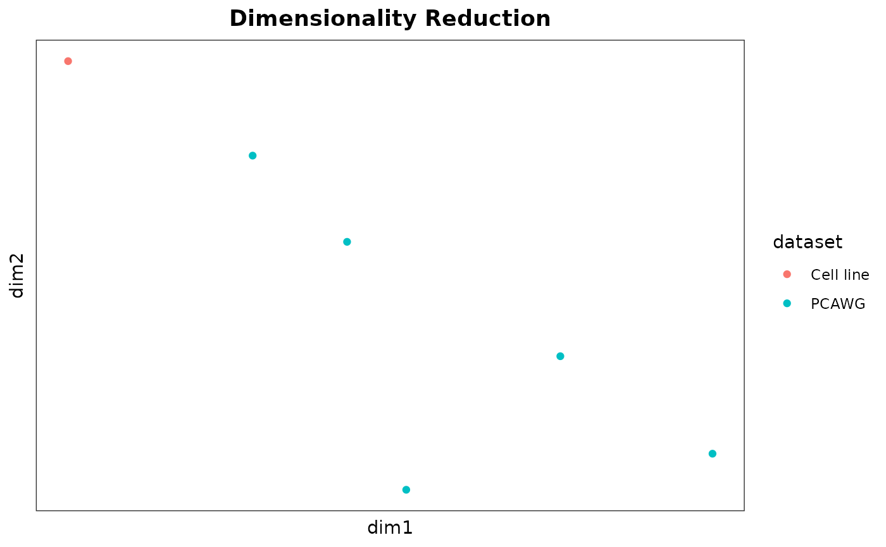

This function creates a scatter plot of the results from a dimensionality reduction technique (e.g., UMAP or PCA). The plot can include optional metadata features such as color, fill, and shape for further distinction of sample groups.
Usage
sig_visualise_dimred(
dimred,
col_sample = "sample",
col_dim1 = "dim1",
col_dim2 = "dim2",
metadata = NULL,
col_fill = NULL,
col_colour = NULL,
col_shape = NULL,
title = "Dimensionality Reduction",
xlab = col_dim1,
ylab = col_dim2
)Arguments
- dimred
A data frame containing the dimensionality reduction results with at least columns for the two dimensions (
col_dim1,col_dim2) and a sample identifier (col_sample).- col_sample
A string specifying the column name in
dimredthat identifies the samples. Default is "sample".- col_dim1
A string specifying the column name in
dimredfor the first dimension. Default is "dim1".- col_dim2
A string specifying the column name in
dimredfor the second dimension. Default is "dim2".- metadata
Optional. A data frame with metadata corresponding to the samples, with columns for the sample identifiers (
col_sample) and other optional aesthetic mappings (col_fill,col_colour,col_shape).- col_fill
Optional. A string specifying the column name in
metadatafor the fill aesthetic. Default is NULL.- col_colour
Optional. A string specifying the column name in
metadatafor the color aesthetic. Default is NULL.- col_shape
Optional. A string specifying the column name in
metadatafor the shape aesthetic. Default is NULL.- title
A string specifying the title of the plot. Default is "Dimensionality Reduction".
- xlab
A string specifying the label for the x-axis. Default is the value of
col_dim1.- ylab
A string specifying the label for the y-axis. Default is the value of
col_dim2.
Examples
# Example UMAP data
dimred <- example_umap()
metadata <- example_umap_metadata()
sig_visualise_dimred(dimred, metadata = metadata, col_colour = "dataset")
